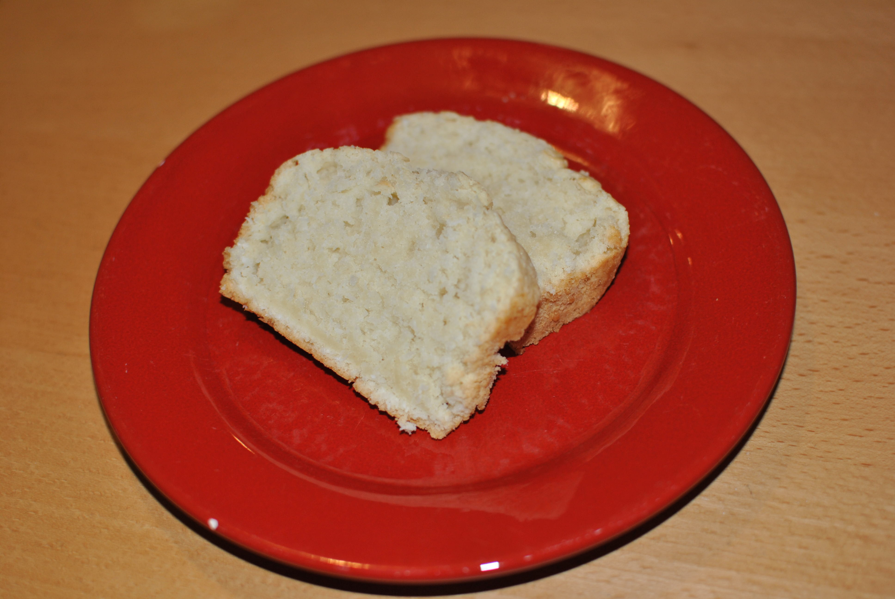

Kokoskuchen

- Zubereitung: ca. 20 Minuten
- Backen: ca. 45 Minuten
- Für 1 Kastenform
Zutaten
- 300 g Mehl
- 1 1/2 TL Backpulver
- 150 g Zucker
- 6 EL Kokosraspel
- 1 TL Vanillezucker
- 300 ml Kokosmilch
- Fett für die Form
Zubereitung
- Den Backofen auf 175° Celsius vorheizen. Die Kastenform einfetten.
- Die trockenen Zutaten in einer großen Schale vermischen, die Kokosmilch hinzufügen und gut verrühren.
- Den Teig in die Kastenform füllen und für ca. 45 Minuten backen.
- Den Kuchen nach dem Backen einige Minuten auskühlen lassen und aus der Form lösen.